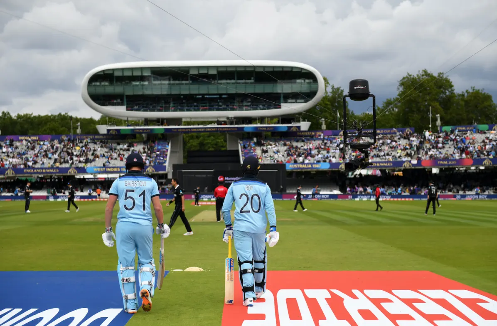

The final
New Zealand made 241/8 and England were all out for 241. The Super Over was tied at 15, and England won on boundaries. Ben Stokes scored 84* in the match.

The 2019 Cricket World Cup was the 12th edition of the men's ODI World Cup. It was hosted by England and Wales, and ten teams played a round-robin stage before the semi-finals.
The final was played at Lord's, London. England and New Zealand finished level in both the match and the Super Over, and England won the title on boundary count — their first World Cup.
New Zealand made 241/8 and England were all out for 241. The Super Over was tied at 15, and England won on boundaries. Ben Stokes scored 84* in the match.
Rohit Sharma of India scored 648 runs, including a record five centuries in a single World Cup.
Mitchell Starc of Australia took 27 wickets. Kane Williamson of New Zealand was named Player of the Tournament.